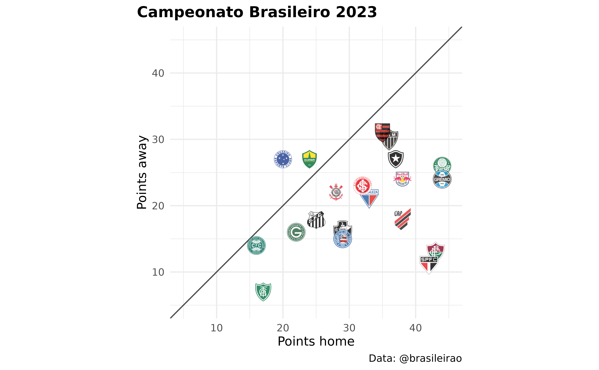
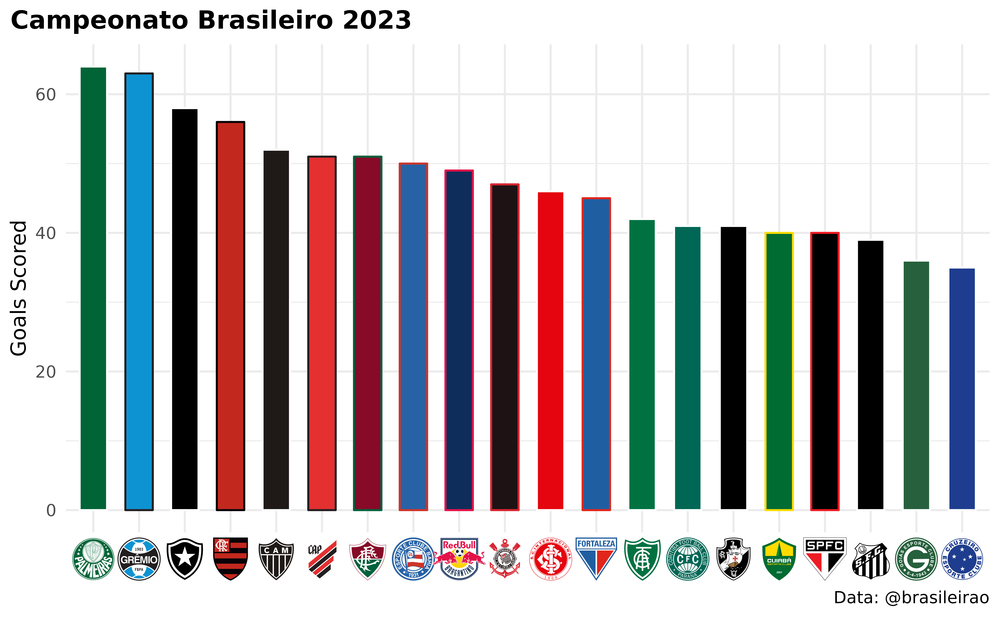
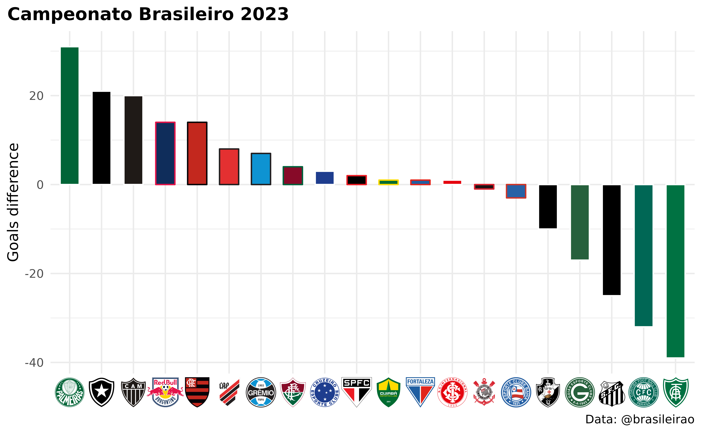

Get Started with futebolplotR
Bruno Mioto & Gabriela Junqueira
Source:vignettes/articles/futebolplotR.Rmd
futebolplotR.RmdInstall the Package
The easiest way to get futebolplotR is to install it
from with:
if (!require("pak")) install.packages("pak")
pak::pak("brunomioto/futebolplotR")Common usage
Let’s explore a few standard scenarios for utilizing
futebolplotR. Initially, we load the essencial
packages.
We will load the data for the Campeonato Brasileiro and explore the database. We will select the 2023 season of the Campeonato Brasileiro
season_2023 <- brasileirao::matches %>%
dplyr::filter(season == 2023) %>%
brasileirao::add_variables()
season_2023_home <- season_2023 %>%
group_by(home) %>%
mutate(total_home_points = sum(home_points),
goal_concede_home = sum(as.numeric(away_score)),
goal_scored_home = sum(as.numeric(home_score))) %>%
ungroup() %>%
slice(1:20) %>%
select(home, home_abbr, total_home_points, goal_concede_home, goal_scored_home) %>%
rename(fc = home)
season_2023_away <- season_2023 %>%
group_by(away) %>%
mutate(total_away_points = sum(away_points),
goal_concede_away = sum(as.numeric(home_score)),
goal_scored_away = sum(as.numeric(away_score))) %>%
ungroup() %>%
slice(1:20) %>%
select(away, total_away_points, goal_concede_away, goal_scored_away) %>%
rename(fc = away)
df_teams <- season_2023_home %>%
left_join(season_2023_away, by = "fc") %>%
group_by(fc) %>%
mutate(goals_concede = sum(goal_concede_home, goal_concede_away),
goals_scored = sum(goal_scored_home, goal_scored_away),
goals_difference = goals_scored - goals_concede) %>%
ungroup()Badges in Scatter Plots
Firstly, we will visualize the points earned at home and away for each team. This will be done to demonstrate how we can use the team badges.
ggplot(df_teams, aes(x = total_home_points, y = total_away_points)) +
geom_abline(color = "grey30")+
futebolplotR::geom_futebol_badges(aes(team_abbr = home_abbr),
width = 0.064, alpha = 0.8) +
labs(
x = "Points home",
y = "Points away",
caption = "Data: @brasileirao",
title = "Campeonato Brasileiro 2023"
) +
theme_minimal() +
theme(
plot.title = element_text(face = "bold"),
plot.title.position = "plot"
) +
coord_fixed(
xlim = c(5,45),
ylim = c(5,45)
)
Team Colors and Badges as Axis Labels
Now, we will demonstrate how we can incorporate each team’s specific colors into the shapes (in this case, the bars of the graph) and how we can use the team badges as axis labels.
ggplot(df_teams, aes(x = reorder(home_abbr, -goals_scored),
y = goals_scored)) +
geom_col(aes(color = home_abbr, fill = home_abbr),
width = 0.6) +
futebolplotR::scale_color_futebol(type = "secondary") +
futebolplotR::scale_fill_futebol(type = "primary") +
labs(
title = "Campeonato Brasileiro 2023",
y = "Goals Scored",
caption = "Data: @brasileirao"
) +
theme_minimal() +
theme(
plot.title = element_text(face = "bold"),
plot.title.position = "plot",
axis.title.x = element_blank(),
#this line triggers the replacement of team abbreviations with logos
axis.text.x = futebolplotR::element_futebol_badge(size = 0.8)
)
ggplot(df_teams, aes(x = reorder(home_abbr, -goals_difference),
y = goals_difference)) +
geom_col(aes(color = home_abbr, fill = home_abbr),
width = 0.6) +
futebolplotR::scale_color_futebol(type = "secondary") +
futebolplotR::scale_fill_futebol(type = "primary") +
labs(
title = "Campeonato Brasileiro 2023",
y = "Goals difference",
caption = "Data: @brasileirao"
) +
theme_minimal() +
theme(
plot.title = element_text(face = "bold"),
plot.title.position = "plot",
axis.title.x = element_blank(),
#this line triggers the replacement of team abbreviations with logos
axis.text.x = futebolplotR::element_futebol_badge(size = 0.8)
)